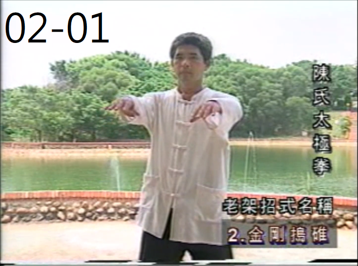
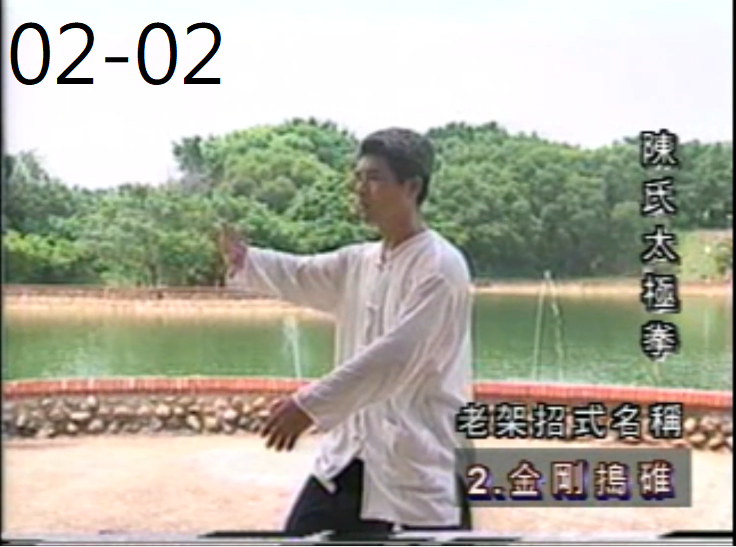
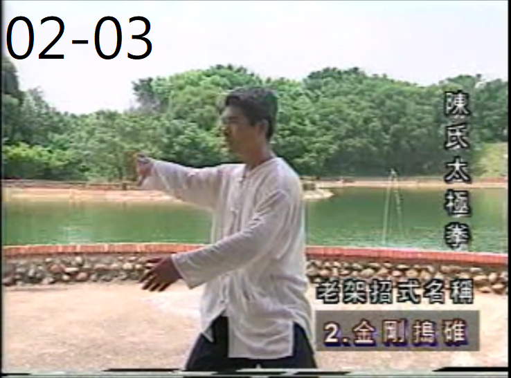
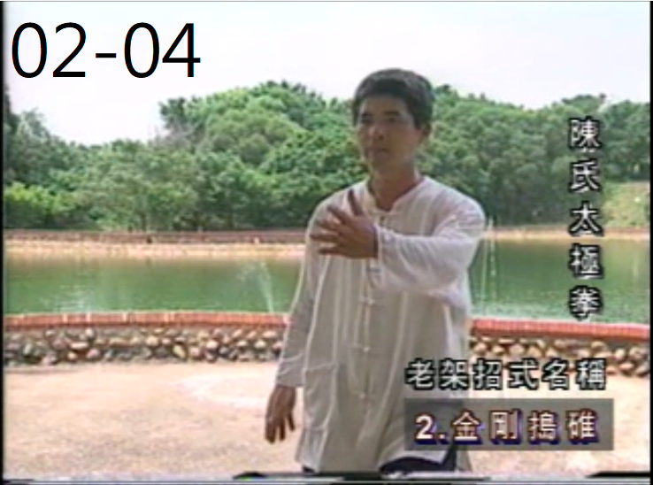
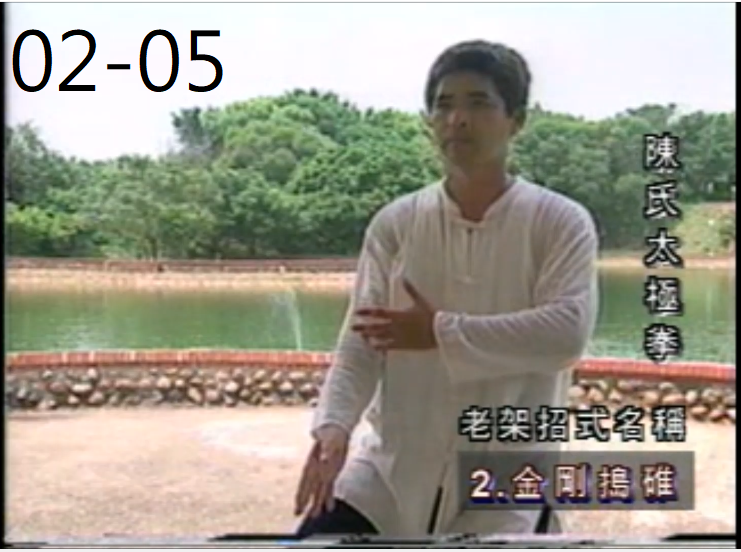
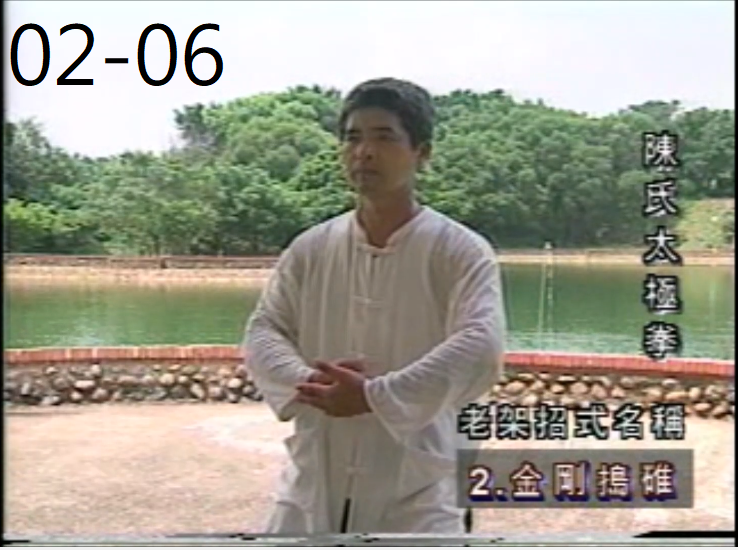

Home
02-金剛搗碓
Video
指導老師：江弦蒼老師
兩手平舉，與肩同高。

腰向右轉，身體下沉，右腳掌向右打開45度，重心由左腳移到右腳，兩手掌心朝右。

重心落至右腳，左腳以腳跟內側貼地，向前跨出一步。

兩手掌順時針畫圈，左手向前伸，右手移到大腿右側，重心漸漸移到左腳成弓步，身體轉正，右腳掌內扣。

右腳跟住右手，前移，虛點於左腳旁，與肩同寬，左手收回搭在右手肘關節處。

右手右腳提起，下落，右腳震地出聲，平踩於左腳旁，與肩同寬，右手握拳落於左手掌上。
